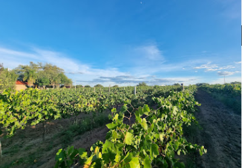

Explora cada una de las vinícolas que forman parte de esta experiencia única. Vive el sabor, la tradición y la cultura de nuestra tierra.
Ver Todo
Somos un viñedo con 12 años en el cultivo de la uva, y ahora incursiando en el enoturismo como una actividad tanto para
los conocedores de vino , como a la gente que les gustan las experiencias en el vino nuestro objetivo es ser referentes en el
vino nuestro objetivo.
es ser referentes en el estado y a nivel republica por las experiencias que ofrecemos, vinos,gastronomia, talleres,catas
y demas servicios.
Hermoso viñedo de 3.5 has, ubicado en lugar privilegiado, en un clima moderado que cuenta con espacios para disfrutar del vino y la buena compañia
con construcción de piedra.
contamos con excelente enólogo, sommelier y chef instalaciones adecuadas para dar buen servicio elaboración de vinos y ofrecemos variedades de vino
y galardonados, seleccionados cuidadosamente.
Vinícola Viña las Cruces

Visítanos y descubre nuestros vinos artesanales en un ambiente natural. Te esperamos para que vivas una experiencia única entre viñedos.